Introduction
Without a doubt the most comprehensive mod when it comes to post-release QA and visuals, 1pp has been a growing work of love for close to 8 years with the aim of providing a refined, polished experience with attention to detail that many felt was lacking in some aspects of Baldur's Gate II compared to its predecessor.
1ppv4 represents the culmination of this effort, bringing together the various previously disjointed graphical and mechanical tweaks and components that have accumulated over the years and many more besides; updated, streamlined and in the form of one coherent installer.
Visit the website or forum for all the latest updates.
•BACK TO TOP
Compatibility
This mod is designed to work on the following classical Infinity Engine games:
- The original Baldur's Gate II (BG2, or just SoA), with or without the Throne of Bhaal (ToB) expansion.
- The conversion projects Baldur's Gate Trilogy (BGT) and Baldur's Gate Tutu (Tutu).
- The original Icewind Dale (IWD) with either one of its expansions, Heart of Winter (HoW) and Trials of the Luremaster (TotLM).
- Icewind Dale II (IWD2).
1pp is a WeiDU mod, and therefore should be compatible with all WeiDU mods. However, we cannot test every single one. If you encounter any bugs, please report them on the forum!
Modders who wish to make their mods compatible with 1pp are strongly recommended to read the 1pp Note for modders which guides them through each step of accomplishing particular modding tasks without breaking compatibility.
Although it is not required for the 1pp mod to function properly, BG2 and TOB players are strongly recommended to download and install the latest version of the BG2 Fixpack before proceeding with the installation of this mod.
• BACK TO TOP
Installation
Notes
If you've previously installed the mod, remove it before extracting the new version. To do this, run setup-1pp.exe , un-install all previously installed components and delete the 📁 1pp folder.
When installing or un-installing, do not close the DOS window by clicking on the X button! Instead, press the Enter key whenever instructed to do so.
Disable any antivirus or other memory-resident software before installing this or any other mod. Some (particularly avast and Norton!) have a tendency to report false positives with mod activity, resulting in failed installs.
You can extract files from the archive using 7zip, WinRAR, ZipGenius or another file compression utility that handles .zip files.
Windows
1pp for Windows is distributed as an extractable compressed archive and includes a WeiDU installer.
Extract the contents of the mod to the folder of the game you wish to modify (the folder which contains the "CHITIN.KEY" file). On successful extraction, there should be a 📁 1pp folder and a setup-1pp.exe file in your game folder. To install, simply double-click setup-1pp.exe and follow the instructions on screen.
Run setup-1pp.exe in your game folder to reinstall, un-install or otherwise change components.
Mac OS X
Unfortunately, this mod is not currently fully compatible with OS X because a few components patching exe file do not support OS X. If you wish to make it so, please post your interest in the forum. (It may help to examine your game launcher and the contents of the existing patch in an editor if you have any technical expertise.)
Linux
1pp for Linux is distributed in the same compressed archive and does not include a WeiDU installer.
Extract the contents of the mod to the folder of the game you wish to modify.
Download the latest Linux version of WeiDU and copy weidu and weinstall to /usr/bin. Then open a terminal and cd to your game installation directory.
Optional: run 'tolower' and answer 'Y' to both queries. You can avoid running the second option (linux.ini) if you've already ran it once in the same directory. To save time, the archive is already tolowered, so there's no need to run the first option (lowercasing file names) either, if you've extracted only this mod since the last time you lowercased file names. If unsure, running tolower and choosing both options is the safe bet.
Run weinstall setup-1pp in your game folder to install the mod. Then run wine BGMain.exe , and start playing.
Note for Complete Un-installation
In addition to the methods above for removing individual components, you can completely un-install the mod using setup-1pp --uninstall at the command line to remove all components without wading through prompts.
⚠️ Warning: new installation process
As of version 4.2.0, options needed for installation are read from 1pp-config-default.ini file, or 1pp-config-user.ini if it exists.
The previous version interrupted installation process with plain text prompts allowing players to customise components to their liking (depending on which IE game the mod is installed for and already installed components). All those options set during installation have been moved into 1pp-config-default.ini file, in 📁 1pp folder. This file provides a 'default' installation.
If you want to define your own customized installation, you have to edit the file 1pp-config-default.ini with Notepad or another text editor, then save it as 1pp-config-user.ini. Each line consists of a configuration option, then '=', then a number. The only thing you should edit is the number.
The installation process will read both ini files and prioritize user's option values. If a value is not set or mismatched in 1pp-config-user.ini, any installation failure will be prevented by reverting it back to its default value.
Here is a chart listing the options related to the installation process:
Component
Option |
Games supported
Description |
| 101 Core paperdolls (main component) |
(only available for Heart of Winter or Trials of the Luremaster if Infinity Animations is installed) |
| 1pp_fdwarf |
FEMALE DWARF PAPERDOLLS STYLE
Use 1pp or IWD style female dwarf paperdolls?
1 = IWD
2 = 1pp [default] |
| 104 GUI additions for BGII |
(BG2, ToB, tutu, tutu_totsc and ca) |
| 1pp_gui_soa |
SoA STYLE LOADING SCREENS FOR ToB
Do you want to include SoA style loading screens for ToB?
1 = Yes [default]
2 = Keep loading screens unchanged |
| 1pp_updated_fonts |
UPDATED FONTS
Install updated fonts? (may cause issues with languages using different font .BAMs)
1 = Yes
2 = Keep fonts unchanged [default] |
1pp_mixed_labels
(only available with Updated fonts installed) |
MIXED CASE LABELS
Use mixed case labels?
1 = Yes [default]
2 = No |
| 114 Softer Spell Effects |
(BG2, ToB, tutu, tutu_totsc and ca) |
| 1pp_agannazar_scorcher |
IWD-STYLE AGANNAZAR's SCORCHER
Install IWD-style Agannazar's Scorcher or alternate style?
1 = IWD style
2 = BGII alternate [defaut] |
| 1pp_dispel_magic_effect |
LESS OBTRUSIVE DISPEL MAGIC EFFECT
Install less obtrusive dispel magic effect?
1 = Yes [default]
2 = No (install improved stock effect instead) |
| 200 Core content patches |
(BG2, ToB, tutu, tutu_totsc and ca) |
| 1pp_hammers_icons |
RUNEHAMMER INVENTORY ICONS
This component overwrites the vanilla Runnehammer icon and sets it to Borok's Fist +2, then assigns Borok's Fist's icon to Runehammer. Do you want to apply those changes?
1 = Yes
2 = No, assign the new icon to Borok's Fist, but keep Runnehammer icon for their respective hammers. [default] |
| 1pp_potions_icons |
UPDATED POTIONS ICONS
Do you want to include updated potion graphics?
1 = Yes
2 = No, everything but Potions! [default] |
| 202 Spell tweaks |
(BG2, ToB, tutu, tutu_totsc and ca) |
| 1pp_iwd_cause_wounds_icons |
IWD-STYLE ICONS FOR 'CAUSE WOUND' SPELLS
Do you want existing 'cause wound' spells to use IWD-style icons? (healing icon in red)
1 = Yes [default]
2 = No, keep BG2 icons for existing spells. |
| 400 Core updates and item patches |
(BG2, ToB, tutu, tutu_totsc and ca). Requires component 200 Core content patches |
1pp_shields_appearance
(Requires component 206 Additional Shield Animations - core) |
SHIELDS APPEARANCE
This sets the standard appearance of shields in the game in the sense that these will be the ones you mostly find in stores, etc. Does not necessarily affect magical items or prevent you from finding other items.
1 = 1ppv4-Baldur's Gate II style [default]
2 = Baldur's Gate I style
3 = Faux Baldur's Gate I style (use BG1 icons but not animations)
4 = Skip this part of the install |
1pp_shields_scatter
(Requires component 206 Additional Shield Animations - core) |
SCATTER SHIELDS THROUGHOUT GAME
This determines whether the available extra shields are scattered throughout the game world (in the form of new items, random finds, etc.) for you to find or not.
1 = Yes [default]
2 = No |
| 1pp_shields_shadows |
PAPERDOLL SHADOWS (SHIELDS)
Traditionally, equipped objects do not render shadows on paperdolls. Enable this option if you want shields to cast shadows on paperdolls.
1 = No
2 = Yes [default] |
1pp_helmets_appearance
(Requires component 208 Additional Helmet Animations - core) |
HELMETS APPEARANCE
This sets the standard appearance of helmets in the game in the sense that these will be the ones you mostly find in stores, etc. Does not necessarily affect magical items or prevent you from finding other items.
1 = 1ppv4 style [default]
2 = Faux Baldur's Gate I style (use BG1 icons but not animations)
3 = Baldur's Gate II style
4 = Skip this part of the install |
1pp_helmets_scatter
(Requires component 208 Additional Helmet Animations - core) |
HELMETS THROUGHOUT GAME
This determines whether the available extra helmets are scattered throughout the game world (in the form of new items, random finds, etc.) for you to find or not.
1 = Yes [default]
2 = No |
| 1pp_helmets_shadows |
PAPERDOLL SHADOWS (HELMETS)
Traditionally, equipped objects do not render shadows on paperdolls. Enable this option if you want helmets to cast shadows on paperdolls.
1 = No
2 = Yes [default] |
1pp_helmets_compatibility
(Requires component 208 Additional Helmet Animations - core) |
HELMETS COMPATIBILITY
This is mainly for unsupported third party mods and determines the animation these will use.
1 = updated Baldur's Gate II style [default]
2 = based on Baldur's Gate I style (automatically set when 1pp_helmets_appearance = 2)
3 = Skip this part of the install |
| 1pp_armours_appearance |
ARMOUR ITEM ICONS
This sets the standard appearance of armour inventory icons in the game. Does not necessarily affect magical items or prevent you from finding other items.
1 = 1ppv4 style [default]
2 = Baldur's Gate I style
3 = Baldur's Gate II style
4 = Skip this part of the install |
| 1pp_armours_scatter |
SCATTER ARMOURS THROUGHOUT GAME
This determines whether the available alternates are scattered throughout the game world (in the form of new items, random finds, etc.) for you to find or not.
1 = Yes [default]
2 = No |
| 1pp_forced_item_colours |
FORCED ITEM COLOURS
This determines which item colours are set/uneditable for equipped items. By default, magical items have set item colours while non magical shields/helmets do not (allowing you to customise them via your clothing colour).
1 = Yes for magical items/No for non-magical items [default]
2 = Yes for both magical and non-magical items
3 = Yes for both magical and non-magical items, but exclude BG1 legacy shields
4 = No for either magical nor non-magical items |
| 1pp_gemlore |
GEMS LORE
Do you want gems to require some lore to identify?
1 = Yes
2 = No [default] |
1pp_tutu_bg1_shields
(only available for tutu and tutu_totsc) |
APPLY SAME SHIELD SETTING TO Tutu/BG1 SHIELDS
Do you want your shield setting to apply to Tutu/BG1 shields as well (warning: replaces Tutu's default shields)?
1 = No [default]
2 = Yes |
1pp_tutu_bg1_helmets
(only available for tutu and tutu_totsc) |
APPLY SAME BG2 HELMET INVENTORY ICON SETTING TO Tutu/BG1 HELMETS
Do you want your BG2 helmet inventory icon choices to apply to Tutu/BG1 helmets as well (warning: replaces Tutu's default helmets)?
1 = No [default]
2 = Yes |
| 1pp_sleeper |
TURN THE SLEEPER INTO A FLAIL
Do you want to turn the morningstar +2 The Sleeper into a flail?
1 = Yes
2 = No, but install the alternate flail icon IBLUN16B as a new resource for modders. [default] |
| 400 Core updates and item patches |
(HoW and TotLM) |
| 1pp_gemlore |
GEMS LORE
Do you want gems to require some lore to identify?
1 = Yes
2 = No [default] |
| 1pp_forced_item_colours_iwd |
ITEM COLOURS FOR NON-MAGICAL ITEMS IN IWD
This determines whether item colours are set for common, non magical shields/helmets. By default, these remain unset so the player can choose their own (matching their clothing colour). By enabling this option, item colours are set for all items.
1 = No [default]
2 = Yes |
| 300 Fixed animations for solars and elementals |
(ToB, Tutu, tutu_totsc and ca) |
| 1pp_solar_weapons |
FIXES ANIMATIONS FOR SOLARS AND ELEMENTALS
There are two choices for the appearance of weapons wielded by solars. Please pick your preference:
1 = New appearance (solid object with glow) [default]
2 = As in BGII vanilla (blurry bright glow all over) |
•BACK TO TOP
[101]1ppv4: Core paperdolls
Supports: SoA, ToB, Tutu, HoW, IWDII (placeholder)
hover to show original content

The component that essentially started it all, this is a port of Baldur's Gate I style paperdolls for the Baldur's Gate II engine (used in SoA/ToB and HoW). Included are reworked 1ppv4 paperdolls for all race/class combinations matching vanilla animations as well as equipped object overlays. New in this version is detection and native support for Infinity Animations, including support for installs of HoW using BG1 animations via the 1pp IWD animation fixpack.
Note that this component does not update icon graphics or item colours, so it is not recommended to be installed by itself. It is, however, required for most of the components that follow.
•BACK TO INDEX
[102-103]1ppv4 Extended palette entries
Non-optional component
Supports: SoA, ToB, Tutu, HoW, IWDII

This component adds new colour gradients to Infinity Engine games, raising the count of available colours from 116 to 256. It also includes a new random colour table making use of them for Baldur's Gate II and new colour set files for Icewind Dale II, giving you more skin/hair colour choices for the various races.
It also fixes a few minor problems with standard gradients. ☛ Read more
[102] Compatibility install
For installs that do not support the binary patch (OSX), this installs the basic files needed for 1pp to work properly but does not support using the new colours as character colours.
[103] Full install
Complete install patching the game executable, enabling full use of the extended colour entries.
When installing the full version, extra choices for skin and hair colour will automatically become available from the ingame selection. As for clothing colours, during character creation and from the inventory the standard complement of 34 primary and secondary colours will be offered. To access more clothing colours, choose 'customise' » 'colours' from the character sheet to gain access to yet another set of 34 colours.
•BACK TO INDEX
[104]1ppv4: GUI additions for BGII
Supports: SoA, ToB, Tutu (if using the BG2 GUI)
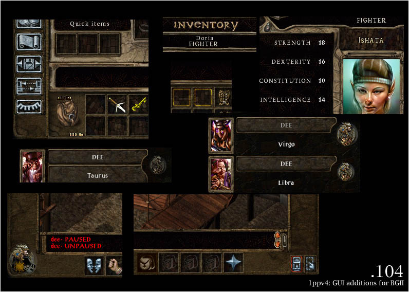
A reworked graphical user interface for Baldur's Gate II SoA/ToB. This aims to get rid of a lot of the rough edges present in the original while maintaining a similar feel. Major changes include a time dial that is not just a box, getting rid of 'infinite parchment' (see additional screenshots) and an optional choice of updated fonts.
➽ Note: as of v4.2.0, the option installing updated fonts (1pp_updated_fonts) is set to 2 by default (2 = Keep fonts unchanged) because it may cause issues with languages using different font .BAMs.
☛ See more
•BACK TO INDEX
[105]1ppv4: Avatar fixes
Requires: [101]
Supports: SoA, ToB, Tutu, HoW, IWDII
hover to show original content
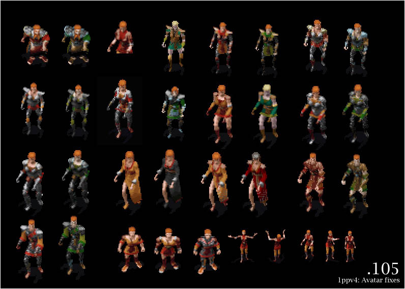
This component contains fixes and improvements for several avatar series of Baldur's Gate II character animations, along with updated paperdolls to better match the new content.
☛ See more
•BACK TO INDEX
[106-109]1ppv4: Female Dwarves
Requires: [101]
Supports: SoA, ToB, Tutu, HoW, IWDII

This component patches Baldur's Gate II engine games to use separate avatar animations for female dwarves and mages of small races, and includes game content for all of these.
☛ See more
•BACK TO INDEX
[110-112]1ppv4: Thieves Galore
Requires: [101] [106-109]
Supports: SoA, ToB, Tutu, HoW, IWDII
Note: Due to the way patching is currently handled, this component will fail if Infinity Animations is already installed. To resolve this issue, install IA after this component.
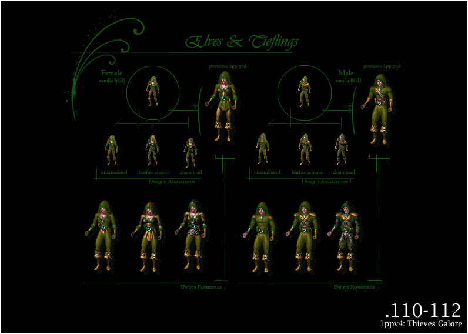
In standard BGII only one armour level of thieves had unique animations (leather armour). Any other armour level would revert to the default unarmoured animation. On the inventory, the first two armour levels had unique paperdolls, anything else would revert to the unarmoured paperdoll.
This component will patch your executable to support full thief animation sequences and install content for them.
☛ See original readme
•BACK TO INDEX
[113]1ppv4: Smart Avatar & Armour Switching
Supports: SoA, ToB, Tutu, HoW, IWDII
hover to show original content

This component allows armour and robes to properly show up for characters of any class when equipped. While normally robes would not show up for fighter/cleric/thief animations, and armour would not show up for mage animations, this is circumvented by changing the character animation accordingly while such items are equipped.
☛ See original readme
•BACK TO INDEX
[114]1ppv4: Softer Spell Effects
Requires enabled 3D support
Supports: SoA (partial), ToB, Tutu, HoW, IWDII (placeholder)
hover to show original content
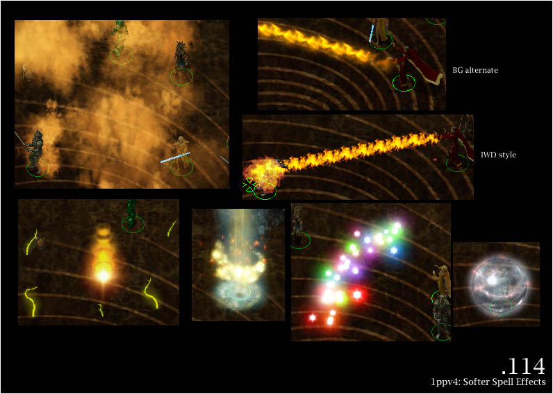
Substantially improved spell effects with smooth alpha blending for Baldur's Gate II engine based IE games. Note that 3D support has to be enabled for this component to work properly - if you run your game with software rendering mode, it is not recommended to install this.
☛ See more information
•BACK TO INDEX
[200]1ppv4: Core content patches
Requires: [101]
Supports: SoA, ToB, Tutu
hover to show original content
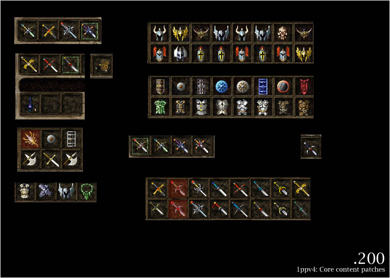
This is essentially the inventory icon/item related patches of 1ppv2. In other words, lots of random icon improvements for BGII, especially on the ToB side of things, as well as some mod item patches and updates. It will form the basis on which 1ppv4 is built on SoA/ToB.
➽ Note: as of v4.2.0, the option updating potions BAM files (1pp_potions_icons) is set to 2 by default (2 = Heavens no -- *Everything* but Potions!).
☛ See original readme
•BACK TO INDEX
[201]1ppv4: Consistent spell and scroll icons
Supports: SoA, ToB, Tutu
hover to show original content

This component harmonises spell icons introduced in Baldur's Gate II with the ones in the original game. It updates icons found in the spellbook as well as the stone styled UI icons along with spell scrolls.
☛ See more
•BACK TO INDEX
[202]1ppv4: Spell tweaks
Supports: SoA, ToB, Tutu
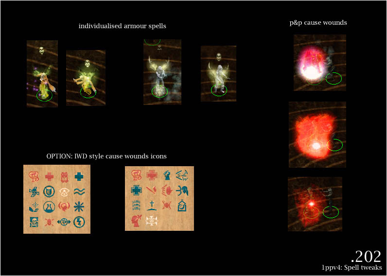
Minor spell tweaks for SoA/ToB, giving armour spells distinct appearances (ghost armour, spirit armour) as well as reworked 'cause wounds' type of spells, bringing them into line with their p&p equivalents and actually making them viable.
•BACK TO INDEX
[203]1ppv4: Restored flame sword animations
Requires: [101]
Supports: SoA, ToB, Tutu, HoW, IWDII
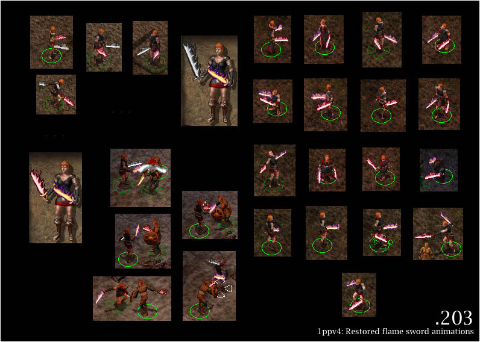
This component restores separate flame sword animations for Baldur's Gate II (similar to the ones in the original). It also includes flame short swords, adding a new item type to the game.
☛ See original readme
•BACK TO INDEX
[204]1ppv4: Colourable Quarterstaves
Requires: [101]
Supports: SoA, ToB, Tutu, HoW, IWDII

This component makes quarterstaves colourable by segment (as opposed to uniform) to allow more variety in-game and match inventory depictions. It also includes item patches to make use of the new content.
☛ See developer reference
•BACK TO INDEX
[205]1ppv4: Legacy Shields v2
Requires: [101]
Supports: SoA, ToB, Tutu, HoW, IWDII

Proper reconstruction and re-renders of the Baldur's Gate I shield animations, superseding the old legacy ports; thanks to invaluable support from the BG:EE team.
•BACK TO INDEX
[206]1ppv4: Additional Shield Animations (core)
Requires: [101]
Supports: SoA, ToB, Tutu, HoW, IWDII
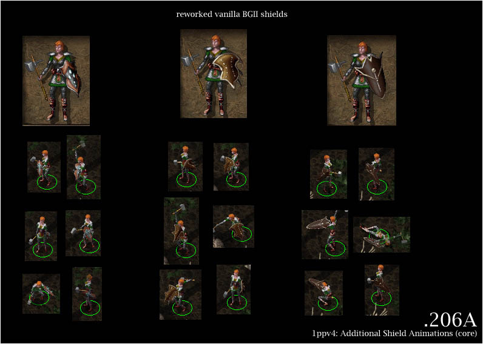
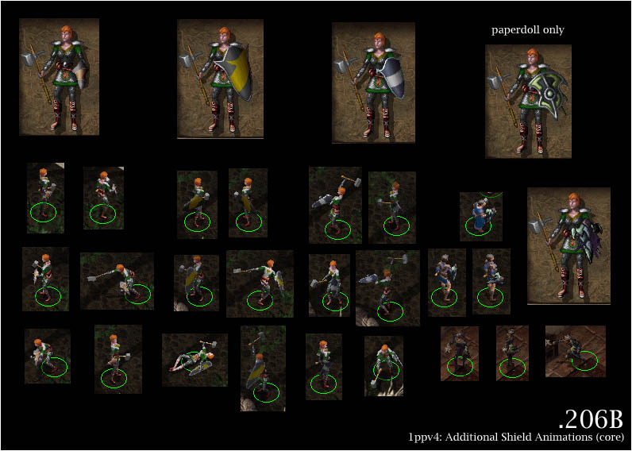
This component includes updated versions of Baldur's Gate II's shield animations, as well as several completely new animation types. Also included is one variant that shares common animations but has distinct paperdolls.
Note that this is a core component; by itself it does not contain any item patches. If installed, the content will instead be used by following 1ppv4 components to give you more options when updating.
•BACK TO INDEX
[207]1ppv4: Wizards' Staves (core)
Requires: [101]
Supports: SoA, ToB, Tutu, HoW, IWDII
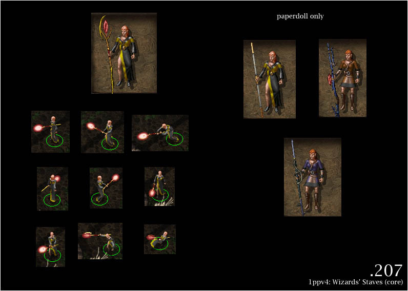
This component includes one new animation (wizard's staff) as well as several new paperdoll appearances for regular colourable quarterstaves.
Note that this is a core component; by itself it does not contain any item patches. If installed, the content will instead be used by following 1ppv4 components to give you more options when updating.
•BACK TO INDEX
[208]1ppv4: Additional Helmet Animations (core)
Requires: [101]
Supports: SoA, ToB, Tutu, HoW, IWDII
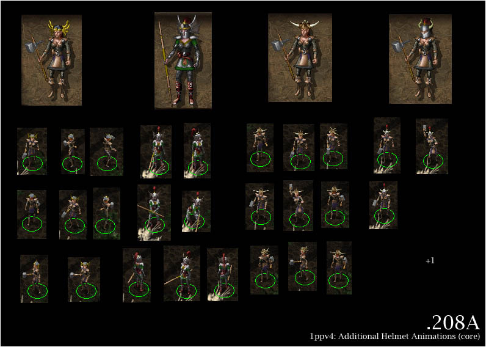

This component includes improved content for Baldur's Gate II's vanilla helmet animations, and introduces five new helmet animations (one not pictured). It also introduces circlets which actually render on model!
Note that this is a core component; by itself it does not contain any item patches. If installed, the content will instead be used by following 1ppv4 components to give you more options when updating.
•BACK TO INDEX
[209]1ppv4: Attachable wings (core)
Requires: [101]
Supports: SoA, ToB, Tutu, HoW, IWDII

This adds equippable wings for elven characters (with some restrictions).
➽ Note: as of v4.2.0, male elves wings are installed by default.
☛ See readme & developer notes
Note that this is a core component; by itself it does not contain any item patches. If installed, the content will instead be used by following 1ppv4 components to give you more options when updating.
•BACK TO INDEX
[210]1ppv4: Increased paperdoll object variety (core)
Requires: [101]
Supports: SoA, ToB, Tutu, HoW, IWDII

This component increases paperdoll variety by adding various alternates sharing existing object animations. Included are separate paperdoll appearances for bastard swords, various types of flails, maces, short bows, and more (not all of them pictured).
Note that this is a core component; by itself it does not contain any item patches. If installed, the content will instead be used by following 1ppv4 components to give you more options when updating.
•BACK TO INDEX
[400]1ppv4: Core updates and item patches
Requires: [101] [200] (on SoA/ToB/Tutu)
Suggested: [203] [204] [205] [206] [207] [208] [209] [210]
Supports: SoA, ToB, Tutu, HoW
This is the main 1ppv4 update component. Make sure you have all components you would like to see used installed before proceeding (suggested components will provide additional content and install choices). The following screenshots depict standard installation choices, except where noted otherwise.
hover to show content previous to installing


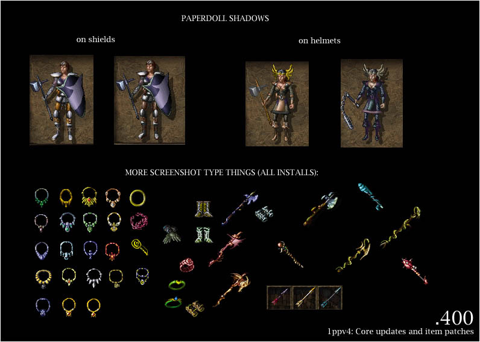
Before v4.2.0, various content choices were presented to you during installation (depending on which IE game you are installing for and installed components).
As of version 4.2.0, installation options are moved into 1pp-config-default.ini file. If you want to modify them, please read this chapter.
➽ Notes: if you want to overwrite the Runehammer icon, set 1pp_hammers_icons option to 1 [default value = 2 (No, assign the new icon to Borok's Fist, but keep the Runehammer icon for their respective hammers.)]. In response to many players requests, turning The Sleeper into a flail is now optional and set by 1pp_sleeper option [default value = 2 (No, but install the alternate flail icon IBLUN16B as a new resource for modders)].
➽ As many players complained to be annoyed by having to identify every gem in the game, Gems lore to identify is now disabled by default. If you wand to re-enable it, set its 1pp_gemlore option to 1 (Yes).
➽ For a full, visual guide to choices see the link below. Consider choosing 'yes' to setting FORCED ITEM COLOURS [1pp_forced_item_colours = 2 (Yes for both magical and non-magical items) or 3 (Yes for both magical and non-magical items, but exclude BG1 legacy shields)].
☛ Alternative install choices
•BACK TO INDEX
[401]1ppv4: Improved projectile effects
Requires: [200] [400]
Supports: SoA, ToB, Tutu

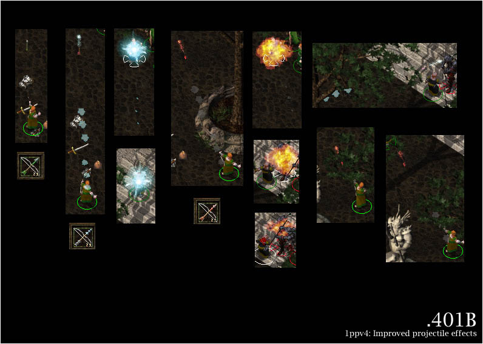
This component improves projectile effects around Baldur's Gate II. Be able to see what kind of bullets/arrows/bolts are shot at you (or if you're really absent-minded, which you are shooting). Includes coloured bolt and bullet projectiles, axes and darts, and what is even neater, you can actually see the ammunition change on your paperdoll!
•BACK TO INDEX
[300]1ppv4: Fixed animations for solars and elementals
Supports: ToB, Tutu
hover to show original content

Fixed rendering for solar animations on ToB based games, as well as blended fire elementals.
•BACK TO INDEX
[301]1ppv4: Miscellaneous content fixes
Supports: SoA, ToB, Tutu, HoW, IWDII
hover to show original content

Contains the following fixes: dog animations (corrupted palette), sitting static peasant woman (bad BAM conversion), alternate fire giant animation slot (was useless as the animation had no unified palette, thus impossible to fill). It also fixes an engine related bug on SoA/ToB and IWD:TotLM that will have helmets randomly render wrong sequences when changing equipment, making them 'float' off your character. Finally, it contains a fix for bugged shield z-buffering on SoA, ToB, IWD:TotLM and IWDII on BGII character animations.
•BACK TO INDEX
Credits and Acknowledgements
Installer & content: Erephine
Support: Gwendolyne
"Anecdotal evidence indicates you are not reading this sentence."
☛ For support or questions, please visit the mod forum.
Special Acknowledgements to:
- Spellhold Studios team for hosting the mod (Forums).
- Extended palette entries component: Thanks to skellytz for his Random color entries in character customization fix.
- Bartimaeus and Sam: thanks for their testing feedback and suggestions of improvements.
- French translation: Gwendolyne (Luren for proofreading).
- Russian translation: prozh.
- Flaming sword component: Thanks in advance especially to Nythrun for letting us use her code! We hope!
- Smart Avatar & Armour Switching component: Thanks in advance especially to Galactygon for letting us use his avatar appearance tweak code.
- Thanks to invaluable support from the BG:EE team, without who this likely would not have been possible, and Trent Oster who has been awesome for sharing ToB development leftovers.
- First installer: CamDawg.
- Everyone else from the La Couronne de Cuivre, The Gibberlings Three, Spellhold Studios forums, and the other Infinity Engine gaming and modding communities who offered their help and support.
Programs/tools used in creation (among others)
- WeiDU, by Wes Weimer, the bigg and Wisp.
- Near Infinity, by Jon Olav Hauglid, FredSRichardson, and Argent77.
- IESDP, maintained by igi and lynx.
- DLTCEP, by Avenger.
- Adobe Photoshop.
- GIMP, by the GIMP team.
- GIF Movie Gear.
- 3ds Max.
- BAM Workshop, by Glenn Flansburg.
- BAMWorkshop 2, by Andrew Bridges.
- 1pp dev tools by Erephine.
- Notepad++, by the Notepad++ team, Don Ho, and the spellcheck plug-in.
- WeiDU Notepad++ Highlighters , by Argent77.
- ConTEXT Text Editor, by Eden Kirin.
- Hex Editor Neo.
- ACDSee Pro.
- Bulk Rename Utility, by TGRMN Software.
Copyrights Information
This mod was created to be freely enjoyed by all Baldur's Gate 2 players. However, it should not be sold, published, compiled or redistributed in any form without the consent of Erephine. First WeiDU packaging was done by CamDawg, last one by Gwendolyne. The original artwork and graphics are ©2004 Erephine.
•BACK TO TOP
Version History
Version 4.2.0 (August 29, 2020)
☛ General overhaul and re-looking:
- Added 1pp.ini metadata file to support AL|EN's "Project Infinity".
- Replaced AUTHOR keyword with SUPPORT.
- Added missing REQUIRE_PREDICATE conditions to avoid installing components in inaccurate games or if required components are not installed.
- Added components DESIGNATED numbers and LABELS.
- Added "always.tpa" library.
- Commented code as much as possible.
- Replaced GAME_IS conditions with variables checks to speed up install time.
- Configuration installation options have been moved into 1pp-config-default.ini file. If you want to modify them, please read this chapter.
- Integrated and improved all BWP Fixpack fixes (thanks Lollorian, The Imp and others!).
- Split huge [400] "Core updates and item patches" component into smaller ones for more comfortable readability and maintenance (checking 2500 or 3000 lines is easier when you search a glitch or a bug in more than 16000 lines of code!). 😉
- Added BG2 Fixpack and ToBEx compatibility.
- Added partial Item Revisions, Spell Revisions and IWDification compatibility in a rather soft way: As SR, IR and IWDification are still beta versions, I gave up trying to write a plain compatibility with them. It would be certainly obsolete in a few months, therefore a waste of time. 😉
- Added and/or improved 1PP crossmods compatibility (BG1 NPC Project, Bolsa, Darron, Improved HaerDalis Swords, Rolles, Ruad, Song and Silence, Stuff of the Magi, The Unusual Oddities Shop).
- Fixed typos and misspellings preventing a few items to be patched (or patching wrong ones...).
- Coding simplification:
- Replaced macros with functions whenever possible.
- Copied entire folders instead of infinite lines of code.
- Grouped actions or patches with ACTION_FOR_EACH and PATCH_FOR_EACH whenever possible.
- Used new and more efficient WeiDU functions (not released when Erephine wrote this mod) and Gwendolyne's patch functions to optimize coding (e.g. ADD_ITEM_EQEFFECT, ALTER_EFFECT and ALTER_ITEM_HEADER replace so many lines of codes!).
- Avoided copying and overwriting the same files again and again...
- Re-formated and updated all readme files (1pp now supports translated readmes).
- Added French translation (Gwendolyne).
- Added Russian translation (prozh).
- Traification. Feel free to provide me with translations. I will include them as soon as possible.
- Removed unused files.
- Reorganized folder architecture tree: created sub-folders to sort paperdolls .BAM files according to creature types.
- Lower cased files.
- Updated WeiDU installer to v246.
- Uploaded mod to official Spellhold Studios GitHub mirror account.
☛ Components specific changes and fixes:
- [101] 1ppv4: Core paperdolls (composant principal) (101_base.tph, 101_ia.tph, 101_iwd.tph, 101_obj.tph)
- Copied entire folders instead of infinite lines of code.
- Infinity Animations paperdolls for Legacy animations: replaced READLN action "Use 1pp or IWD style female dwarf paperdolls?" with reading new setting (1pp_fdwarf) from 1pp-config-default.ini or 1pp-config-user.ini [default value = 2 (1pp style)].
- [102-103] 1ppv4: Extended palette entries (102_compat.tph and 103_extpal.tph)
- Copied entire folders instead of infinite lines of code.
- Fixed random color entries in character customization (thanks skellytz!): Now all hair, skin, major/minor colors you pick in the character customization will stick on game load (i.e., the colors aren't from the random range anymore).
- [104] 1ppv4: GUI additions for BGII (104_core.tph)
- Copied entire folders instead of infinite lines of code.
- Replaced READLN actions "Do you want to include SoA style loading screens for ToB?", "Install updated fonts? (may cause issues with languages using different font .BAMs)" and "Use mixed case labels?" with reading new settings (1pp_gui_soa, 1pp_updated_fonts and 1pp_mixed_labels) from 1pp-config-default.ini or 1pp-config-user.ini [default values are defined in this chapter].
- [105] 1ppv4: Avatar fixes (105_avatars.tph)
- Copied entire folders instead of infinite lines of code.
- [106-107-108-109] 1ppv4: Female Dwarves (106_f_dwarves_bg2.tph, 107_f_dwarves_iwd2.tph, 108_f_dwarves_odd2.tph and 109_f_dwarves_iwd.tph)
- Copied entire folders instead of infinite lines of code.
- [110-111-112] 1ppv4: Thieves Galore (110_thieves_iwd.tph, 111_thieves_bg2.tph and 112_thieves_iwd2.tph)
- Copied entire folders instead of infinite lines of code.
- [113] 1ppv4: Smart Avatar & Armour Switching (113_switch.tph)
- Copied entire folders instead of infinite lines of code.
- Used newer and more efficient ADD_ITEM_EQEFFECT WeiDU function to replace so many lines of codes.
- [114] 1ppv4: Softer Spell Effects (114_effects.tph)
- Replaced READLN action "WARNING: This component will only work properly with 3D support enabled (alpha blending). Installing this component on BG2 in software rendering mode IS NOT A GOOD IDEA." with reading '3D Acceleration=1' in baldur.ini, icewind.ini or icewind2.ini before running the component.
- Replaced READLN actions "Install IWD-style Agannazar's Scorcher or alternate style?" and "Install less obtrusive dispel magic effect?" with reading new settings (1pp_agannazar_scorcher and 1pp_dispel_magic_effect) from 1pp-config-default.ini or 1pp-config-user.ini [default values are defined in this chapter].
- Function GW_MODIFY_PROJ replaces
(Lollorian's BWP Fixpack misc patchified code changes
(114_effects.tph.patch: modify new projectile values in ALL spell headers) which was inefficient and patched nothing. Moreover, it was using a wrong offset coding for ITM files. Source: commit.
- Added BG2 Fixpack and partial SR compatibility in a rather softer way.
- specific fixes:
- spin897.spl (Gas Spore): added BG2 Fixpack compatibility. BG2 Fixpack replaces CLOUDKIL.pro with cdnpcsym.pro, preventing 1pp to replace it with 1pgspore.pro.
- spwi614.spl (Death fog): added Acid Fog SR compatibility. SR replaces CLOUDKIL.pro with dvafog.pro, preventing 1pp to replace it with 1pdeathf.pro.
- spwi810.spl (Incendiary Cloud): added SR compatibility. SR replaces CLOUDKIL.pro with dvicloud.pro, preventing 1pp to replace it with 1pincind.pro.
- [200] 1ppv4: Core content patches (200_1ppv2_cut.tph)
- Added a new setting (1pp_hammers_icons) allowing to make alternate the overwriting of the Runehammer icon (saves vanilla IHAMM10 icon and installs new IHAMM10 1pp icon as IHAMM05B), and not to set Borok's Fist's icon to Runehammers [default value = 2 (No, assign the new icon to Borok's Fist, but keep the Runehammer icon for their respective hammers.)].
- Replaced READLN action "Do you want to include updated potion graphics?" with reading new setting (1pp_potions_icons) from 1pp-config-default.ini or 1pp-config-user.ini [default value = 2 (Heavens no -- *Everything* but Potions!)].
- Code simplified or re-written with newer functions to provide automatic process:
- Replaced WRITE_LONG 0x3E 0 and WRITE_ASCII 0x3A ~ISHLDS01~ with WRITE_ASCII 0x3A ~ISHLDS01~ #8. Id. with offsets 0x48 0x44, and 0x5C 0x58.
- Used DELETE_EFFECT and CLONE_EFFECT combo to add new equipped color effects, which avoids writing lines of codes!
- 1ppv2 BAMs: created copies of a few vanilla inventory icons for modding purpose (Club of Detonation +3, Splint Mail +1, Chain Mail +3, Mage Robe of Cold Resistance, Mage Robe of Fire Resistance, Mage Robe of Electric Resistance, Knave's Robe, Traveler's Robe, Adventurer's Robe, Robes of the Good, Neutral, and Evil Archmagi, Suryris's Blade +2, Ravager +4, Halberd +3, The Eyes of Truth, Helm of the Rock, Leather Armor, Studded Leather Armor, Plate Mail, Mithral Field Plate +2, Quiver of Plenty +1, Bastard Sword +2, Celestial Fury +3, Short Sword of Mask +4, Angurvadal +4, Foebane +3, Purifier +4, Yamato +4, Usuno's Blade +4, Spectral Brand +4, Hindo's Doom +3, Bastard Sword +3, Katana +3, Scimitar +3, The Answerer +4, Gram the Sword of Grief +5).
Instead of definitively overwriting them, it now saves them with V suffixe before overwriting them, and does not overwrite anymore the following icons that are irrelevant (EE does not validate this change) : does not replace iax1h14.bam (Axe of the Unyielding +3) with the very inaccurate IWD Celebrant's Blade icon, idagg11.bam (Boomerang Dagger) with a clone of IMISC75 (Dagger of Venom), and isw1h06.bam (Varscona +2) with a clone of ISW1H41 (Long Sword +2).
Does not overwrite Harbinger's icon and copies an alternate resource for modding purpose (isw2h07B). This way, Harbinger keeps its golden icon which fits to its colors settings.
- specific fixes:
- dagg21.itm & dagg22.itm (Daggers of the Star): reverted to their original inventory icon IDAGG21. 1PP sets them to IDAGG18 (Shadow Thief Dagger icon), but EE does not validate this change.
- halb07.itm (Halberd +2): reverted to its original inventory icon IHALB07. 1PP sets it to IHALB03 (Suryris's Blade +2 icon), but EE does not validate this change.
- sw1h31.itm (Daystar +2): reverted to its original inventory icon ISW1H31. 1PP sets it to ISW1H34 (Albruin +1), but EE does not validate this change. Then switches back its colorisation with Albruin (400_update_bgii_swords).
- sw1h34.itm (Albruin +1): reverted to its original inventory icon ISW1H34. 1PP sets it to ISW1H31 (Daystar +2), but EE does not validate this change. Then switched back its colorisation with Daystar (400_update_bgii_swords).
- sw1h41.itm (Long Sword +2): reverted to its original inventory icon ISW1H41. 1PP sets it to SW1H06 (Varscona +2 icon), but EE does not validate this change. Then removed the colorisation modified by 400_update_bgii_swords and sets it to SW1H73 (Long Sword +3) that deserves those settings.
- sw2h10.itm and sw2h19.itm (Carsomyr +5 and +6): reverted to their original inventory icon ISW2H10. 1PP sets them to ISW2H20, but EE does not validate this change.
- sw2h11.itm (Two-handed Sword +2): reverted to its original inventory icon ISW2H11. 1PP sets it to ISW2H03, but EE does not validate this change.
- sw2h20.itm (Two-handed Sword +3): reverted to its original inventory icon ISW2H20. 1PP sets it to ISW2H06, but EE does not validate this change.
- sw1hwk.itm (Water's Edge +3): wrong identified name fix moved from 400_update_bgii_misc.tpa because Core content patches component installs it and is a pre-requisite for Core updates and item patches component.
- BW Herbs mod patches: fixed a typo (was copying BW02IPO1_l.BAM instead of BW02IPO1.BAM).
- [201] 1ppv4: Consistent spell and scroll icons (201_spellsandscrolls.tph)
- Integrated BWP Fixpack patch: restored Energy Blades spell and scroll icons (SPWI920) overwritten with Black Blade of Disaster's ones.
- [202] 1ppv4: Spell tweaks (202_spelltweaks.tph)
- Replaced READLN action "WARNING: SPPR142/1342 (Cause Light Wounds, Cause Medium Wounds) seem to be already taken by a previously installed mod. Proceeding to install may cause issues." with a new code using !FILE_CONTAINS_EVALUATED(~spell.ids~ ~~). This will avoid to overwrite existing spells.
- Replaced READLN action "Do you want existing 'cause wound' spells to use IWD-style icons? (healing icon in red)" with reading new setting (1pp_iwd_cause_wounds_icons) from 1pp-config-default.ini or 1pp-config-user.ini [default value = 1 (Yes)].
- Replaced BWP Fixpack Lollorian's patchified Armor animation changes (202_spelltweaks.tph.patch: modifies opcode #215 visual effect in ALL spell headers) with WeiDU innate ALTER_EFFECT function. Source: commit.
- Added SR compatibility for individualised armour effects. 1PP patches also op#215 with GARMORH resource (spwi317.spl: Ghost Armor).
- Added IWDIfication and SR compatibility for installing PnP/IWD-style 'cause wounds' spells in a rather softer way.
- [203] 1ppv4: Restored flame sword animations (203_fslong.tph)
- Copied entire folders instead of infinite lines of code.
- Used new 1pp_compatibility.tph library to improve 1PP crossmods compatibility (Improved HaerDalis Swords).
- [204] 1ppv4: Colourable Quarterstaves (204_qsbase.tph)
- Copied entire folders instead of infinite lines of code.
- Used new 1pp_compatibility.tph library to improve 1PP crossmods compatibility (Bolsa, Rolles, Ruad, Stuff of the Magi and The Unusual Oddities Shop).
- [208] 1ppv4: Additional Helmet Animations (208_v4_helmets.tph)
- [209] 1ppv4: Attachable wings (core) (209_v4_wings.tph)
- Added automatic installation of male elves wings by default.
- [210] 1ppv4: Increased paperdoll object variety (210_v4_ppd_variety.tph)
- CRE files: used READ_LONG 0x28 instead of READ_SHORT 0x28 (dword!).
- ITM files: used WRITE_LONG 0x18 (THIS BAND BNOT BIT2) to remove droppable flag instead of writing the offset new value.
- Simplified codes creating undroppable clones of weapons (in particular with tutu_var) replacing primary weapon with undroppable clone and moving it to inventory.
- [400] 1ppv4: Core updates and item patches (400_1pp_update_bgii.tph and 400_1pp_update_iwd.tph)
- Split this huge component into smaller ones (checking 2500 or 3000 lines is easier when you search a glitch or a bug in more than 16000 lines of code!).
- Replaced READLN action "Do you want gems to require some lore to identify?" with reading new setting (1pp_gemlore) from 1pp-config-default.ini or 1pp-config-user.ini [default value = 2 (No)].
- Added a new setting (1pp_hammers_icons) in 1pp-config-default.ini or 1pp-config-user.ini allowing to make alternate the overwriting of the Runehammer icon (saves vanilla IHAMM10 icon and installs new IHAMM10 1pp icon as IHAMM05B), and not to set Borok's Fist's icon to Runehammers [default value = 2 (No, assign the new icon to Borok's Fist, but keep the Runehammer icon for their respective hammers.)].
- Added a new setting (1pp_sleeper) in 1pp-config-default.ini or 1pp-config-user.ini allowing to make alternate the turning of The Sleeper into a flail [default value = 2 (No, but install the alternate flail icon IBLUN16B as a new resource for modders)]. In any case, 1PP does not overwrites its original inventory bam with a new one, but installs a new icon (IBLUN16B) as an alternate, and saves the vanilla icon for compatibility with other mods purpose.
- Replaced tooltip section with two new functions that 1) add a fourth column if needed, 2) automatically write values in tooltip.2da from the tra file.
- Integrated Lollorian's BWP Fixpack patch for Ashes of Embers compatibility (400_1pp_update_bgii.tph.patch): renames 1PPv4 BAND0X.ITMs to XOBAND0X.ITMs, using Lollorian's prefix (according to BWL: XO, submitted by Chaplain, 11.03.2010, Prefix owner also known as Lollorian). Source.
- Added ToBEx compatibility for circlets: item flag EE/Ex: Toggle critical hits flag (BIT25).
- Gems sub-component: code simplified and re-written to avoid overwriting files when selecting option no lore needed for identification (1pp_gemlore = 2). Build an array to define new gems lore values to identify. Same tph used for IWD and BG2 games.
- Code simplified or re-written with newer functions to provide automatic process:
- Grouped actions or patches with ACTION_FOR_EACH and PATCH_FOR_EACH whenever possible.
- Replaced macros with functions whenever possible.
- Replaced WRITE_LONG 0x3E 0 and WRITE_ASCII 0x3A ~ISHLDS01~ with WRITE_ASCII 0x3A ~ISHLDS01~ #8. Id. with offsets 0x48 0x44, and 0x5C 0x58.
- Used new 1pp_compatibility.tph library to improve 1PP crossmods compatibility (BG1 NPC Project, Darron, Rolles, Ruad, Song and Silence, Stuff of the Magi, The Unusual Oddities Shop).
- shields specific fixes (400_update_bgii_shields.tpa):
- shld02.itm (Small Shield +1): LPM ~clear~ was missing, and the code stacked opcode #7 global effects.
- shld31a.itm (Gorm's Arm +3): fixed wrong coding (WRITE_SHORT instead of WRITE_BYTE for Minimum strength value).
- shld01p.itm (Buckler +2): fixed wrong coding (opcode #0 parameter1 0xfffffe - 16777214 ?? - should be -3), added opcode #0 with parameter1 = -3 and parameter2 = 4 to add missing protection vs piercing weapons, added missing price, and fixed item description to fit ITM file.
- shld06p.itm (Redshield +1, +4 vs. monstrous): fixed wrong coding (op#219: switch parameter1 and 2, and parameter2 2 - EA.IDS - should be 3 - GENERAL.IDS), added an external effect (shld06p.eff), and replaced opcode #178 with opcode #177, otherwise opcode #178 won't work.
- shld07p.itm (Sartessa's Vengeance +1): fixed wrong coding for add magical flag [replaced WRITE_BYTE 0x1b 0x6c with WRITE_LONG 0x18 (THIS | BIT6)].
- shld08p.itm (Tarloc's Contingency +1): code simplified (1tarsp.spl) and fixed wrong coding for Casting sound (1tarss.spl).
- shld09p.itm (Shield of Devotion +1): fixed wrong coding op#62 (parameter2 should be 4, not 3).
- x#ajshld.itm (Ilvastarr Family Shield - The BG1 NPC Project mod): fixed a typo (was patching #ajshld instead of x#ajshld).
- helmets specific fixes (400_update_bgii_helmets.tpa):
- helm33.itm (Gold Horned Helm): fixed a typo (was patching helm22 instead of helm33).
- xoband02.itm (Silver Circlet): fixed wrong coding opcodes #33, 34 & 35 (parameter2 originally set to 1 should be 0) and added opcodes #36 & 37 to match item description (+1 to Saving Throws).
- xoband03.itm (Eilistraee's Boon +1): same fixes for opcodes #33, 34, 35, 36 & 37. Fixed wrong coding op#31: parameter1 originally set to 110, should be 10, and parameter2 switched from 2 to 0 to match item description (+10% magic damage resistance).
- xoband04.itm (Circlet of the Archmagi): same fixes for opcodes #33, 34, 35, 36 & 37. Added one missing equipped effects (LPM ADD_ITEM_EQEFFECT #19).
- launchers specific fixes (400_update_bgii_launchers.tpa):
- xbow15.itm & xbow16.itm (Firetooth +4/+5): added bolt location color (wpink) to reflect the fire bolt on character paperdoll.
- weapons specific fixes (400_update_bgii_weapons.tpa):
- Added IR compatibility for throwing axes, daggers and hammers if variant a and/or b items are detected: ax1h08.itm (Hangard's Axe +2), ax1h09.itm (Rifthome Axe +3), ax1h10.itm (Azuredge +3), ax1h16.itm (K'logarath +4), dagg11.itm (Boomerang Dagger +2), dagg12.itm (Firetooth +3), hamm06.itm (Dwarven Thrower +3) and hamm09.itm (Crom Faeyr +5).
- dagg12.itm (Firetooth +3): fixed typos in LPM ~pulse~ macro (redundant setr variable set to 152 and 189 should be setg and setb, otherwise they overwrite the setr value and don't set the correct setg and setb values).
- dagg21.itm & dagg22.itm (Daggers of the Star): restored their original colors as component #200 reverted to their original inventory icon IDAGG21, this patch would give them wrong colors.
- halb08.itm (Duskblade +2): fixed a typo patching halb06 instead of halb08.
- hamm10.itm & hamm11.itm (Runehammers): new 1pp_hammers_icons setting gives the choice to assign them, or not, the Borok's Fist's icon.
- miscellaneous specific fixes (400_update_bgii_misc.tpa):
- sw1hwk.itm (Water's Edge +3): wrong identified name fix moved into 200_1ppv2_cut.tph because Core content patches component installs it and is a pre-requisite.
- misc89.itm (Edwin's Amulet): added bgmisc89 (BGT and IR compatibility).
- book06.itm (Tome of Clear Thought), book07.itm (Tome of Leadership and Influence) and book08.itm (Tome of Understanding): harmonized header icon with new inventory icon (IBOOK768) for consistency.
- swords specific fixes (400_update_bgii_swords.tpa):
- Does not overwrite Varscona's icon with a clone of ISW1H41 (Long Sword +2) because EE does not validate this change.
- sw1h31.itm (Daystar +2): as 1PP (Core content patches) sets its icon to ISW1H34 (Albruin +1), but EE does not validate this change, this version reverts to its original inventory icon ISW1H31, and this component switches back its colorisation with Albruin.
- sw1h34.itm (Albruin +1): as 1PP (Core content patches) sets its icon to ISW1H31 (Daystar +2), but EE does not validate this change, this version reverts to its original inventory icon ISW1H31; and this component switches back colorisation with Daystar.
- sw1h41.itm (Long Sword +2): as 1PP (Core content patches) sets its icon to SW1H06 (Varscona +2 icon), but EE does not validate this change, this version reverts to its original inventory icon ISW1H41. Then, this component removes its re-colorisation and sets it to SW1H73 (Long Sword +3) that deserves those settings.
- sw2h06.itm and sw1h13.itm (Spider's Bane +2): harmonized both versions. Now they get the same icon and coloration (no change from vanilla SW1H13 as its colors fit the new icon installed by 1PP).
- sw2h07.itm (Harbinger +3): does not overwrite Harbinger's icon and copy an alternate resource for modding purpose. This way, Harbinger keeps its golden icon which fits to its colors settings.
- sw1p01.itm (Viper's Edge +2): removed the op#134 global effect (Petrification) otherwise it would be impossible to wield the sword. 😉 Fixed wrong coding (the extended effects were not implemented) and modified the cursed effects probabilities, so that they don't stack when not necessary (e.g. why should you be poisoned when petrified?).
- blunt weapons specific fixes (400_update_bgii_blunt.tpa):
- blun16.itm (The Sleeper +2): new 1pp_sleeper setting gives the choice to turn it into a flail. If turned into a flail, modifies minimum strength value and uses a new icon (IBLUN16B) to avoid overwriting the vanilla one (let's keep it for modders!).
- new staves specific fixes (400_update_bgii_staves2.tpa):
- Avoided copying and overwriting the same files again and again...
- Rewrote tooltip.2da appending to make sure it contains at least four columns, so we can add all Narbucchad's Demise staves abilities. Macro GW_ADJUST_TOOLTIP adds new columns in tooltip.2da. Function GW_ADD_ITEM_TOOLTIPS adds new entries in tooltip.2da.
- armors specific fixes (400_update_bgii_armors.tpa):
- chan03b.itm (Werebane Mail +2): added missing identified name.
- plat15.itm (Pride of the Legion +2): reverted its inventory and description icons (wrongly set to IPLAT23 and CPLAT05) as EE does not validate this change.
- plat23.itm (Full Plate Mail +2): removed from the patches as EE does not validate them (this silver and golden full plate was turned into a black one!).
- scatters items specific fixes (400_update_bgii_scatter.tph):
- Coding simplification:
- Replaced combo ADD_STORE_ITEM + REMOVE_STORE_ITEM with LPF REPLACE_STORE_ITEM.
- Replaced two ADD_STORE_ITEM #1 with one ADD_STORE_ITEM #2.
- dmark1.sto (Fovem, Docks merchant) & trmer02.sto (Trademeet merchant): set number_in_stock to 2, otherwise the former code did not work (was supposed to add one Plate and remove the Plate +1, but there was already 1 Plate in the store!)
- [401] 1ppv4: Improved projectile effects (401_projectiles.tph)
- Code fully re-written with new functions to provide automatic process.
- Function GW_CLEAR_DUPLICATED_OPCODES: does not stack anymore opcodes #83 and #197, clears duplicated vanilla op#89 and #197 effects in SPL and ITM files and checks if protection from SPEAR and/or Bounce SPEAR is already set before adding it.
- Function GW_MODIFY_PROJ replaces BWP Fixpack patch (401_projectiles.tph.patch): now it modifies projectile value only when needed (does not patch melee headers anymore), replaces ADD_ITEM_EQEFFECT, ADD_ITEM_EFFECT, ADD_SPELL_EFFECT and macros with the newer and more efficient CLONE_EFFECT WeiDU function to give new opcodes #83 and #197 the same settings than existing ones (target, resist_dispel, duration, power...). It modifies all extended headers and avoids writing lines of codes!
- Added partial IR and SR compatibility in a rather soft way.
- Improved 1PP crossmods compatibility (Rolles, Ruad, Stuff of the Magi).
- specific fixes:
- ax1h08.itm (Hangard's Axe +2), ax1h09.itm (Rifthome Axe +3), ax1h10.itm (Azuredge +3) and ax1h16.itm (K'logarath +4): added IR compatibility (patches itemB files).
- bolt09.itm (Bolt +3): fixed a typo (was patching bolt06 instead of bolt09).
- Sets new projectiles to Quivers of Plenty, Cases of Plenty, Bags of Plenty and Sling of Everard: Why quivers and launchers needing no ammo should not get new 1pp projectiles?
- dagg05.itm (Throwing Dagger), dagg11.itm (Boomerang Dagger +2) and dagg12.itm (Firetooth +3): added IR compatibility (patches itemB files).
- sper04.itm (Javelin): switched Thrown and Melee strings ref in tooltip.2da.
- items aurstaf, dragring, magebra, slayerwp and globblu4 (Blue Globe): added missing protections from new normal 1pp ammo projectiles (1dagg05 and 1dart01). The code was only providing protection from 1arow01 and 1bolt01 new projectiles.
- npshld.itm (Delryn Family Shield): same fix as above + IR compatibility (protection from all types of missiles, including magic ones).
- shld24.itm (Reflection Shield +1): same fix as above + cleared duplicate entries and added IR compatibility (IR replaces opcode #197 with opcode #83).
- brac18.itm (Gloves of Missile Snaring): Don't forget to add Protection from projectiles if IR is installed.
- spin546.spl (Inertial Barrier), spcl721.spl (Storm Shield) & spcl914.spl (Greater Evasion): patched all headers (was patching only the first one), fixed wrong duration, target, power, resist dispel... Added missing protections from new normal 1pp ammo projectiles (1dagg05 and 1dart01). The code was only providing protection from 1arow01 and 1bolt01 new projectiles.
- Protection From Normal Missiles spells (spra303, spwi311 & cdwi311 - added from BG2 Fixpack): same fixes as above + SR compatibility (protection from all types of missiles, including magic ones).
- sppr613.spl (Physical Mirror): cleared duplicate entries and added SR compatibility (SR replaces opcode #197 with opcode #83).
- Included Entropy Shield spell (protection from new 1pp projectiles) if IWDIfication is installed.
- [300] 1ppv4: Fixed animations for solars and elementals (300_solar_fix.tph)
Version 4.1.0 (November 12, 2012)
- Scale shields now have their own animations.
- IImproved carried/description images.
- Fixed low resolution GUI overlap.
Version 4.0.0 (August 6, 2012)
•BACK TO TOP